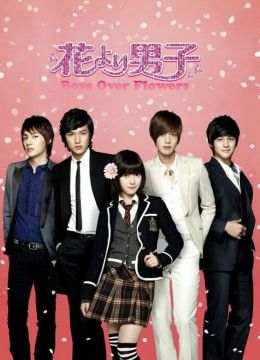
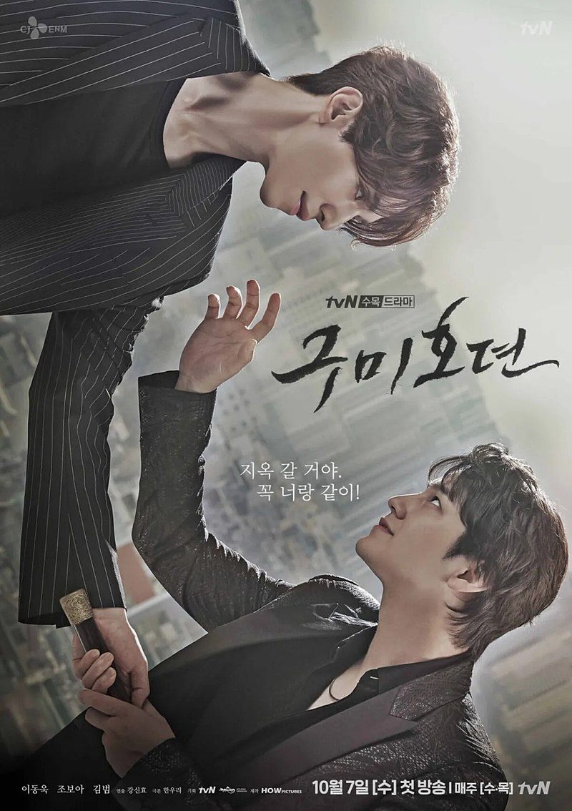
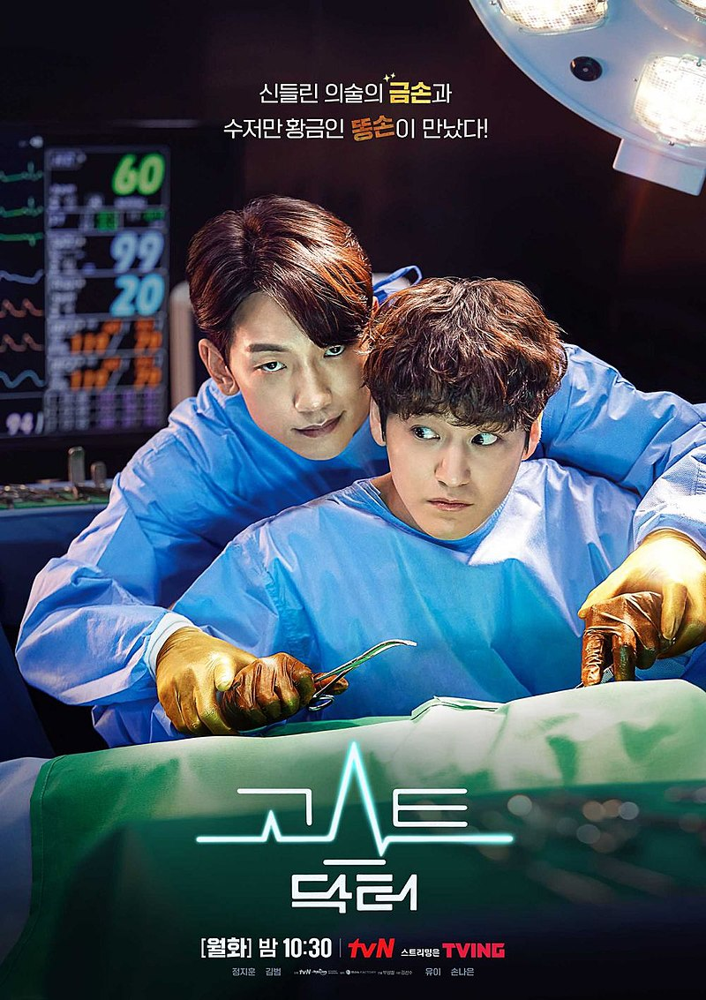
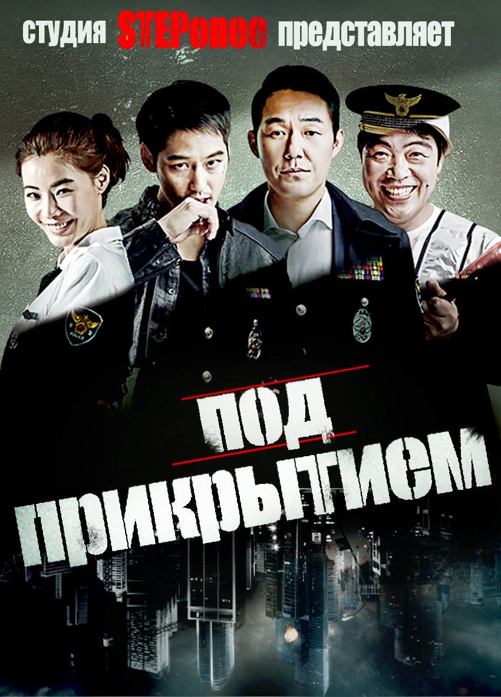

Мальчики краше цветов, 2009
Падам-падам... Стук их сердец, 2011
К востоку от рая, 2008-2009
Город влюбленных, 2010

История девятихвостого лиса, 2020

Юридическая школа, 2021

Призрачный доктор, 2022
